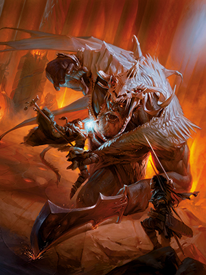
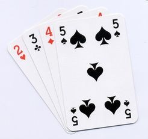

Welcome to the Stony Brook Tabletop Club. If your looking for a place to make
or join a Dungeons and Dragons campaign, you have come to the right place. For
those of you who are interested in other types of board games, we have those
as well.

Dungeons and Dragons

Other Games
The SBU TableTop Club meets every week at Friday 4PM EST. To find out where these
meetings take place, please join our discord or follow the club on Facebook. For individual
DnD campaigns, please coordinate with your Dungeon Master to establish a meeting time.